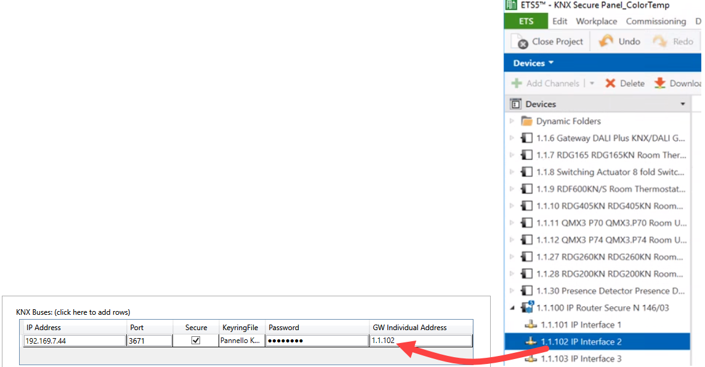
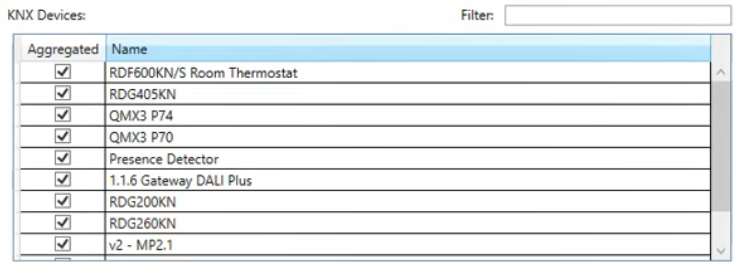

Configure KNX Buses, Secure Option, and Devices
- The KNX Tool Converter: Settings window is open.
- In the KNX Buses section, specify the following parameters:
- IP Address
NOTE: When setting the IP address for the communication through KNXnet/IP routers, if message routing was activated, you must configure one IP address only; if message routing was disabled, you can configure as many IP addresses as required. For more details, see KNXnet/IP Router Communication. - Port
- GW Individual Address
NOTE: Enter the exact gateway unique address as set in the ETS tool. See the following example.
- If the ETS project was configured with the KNX Secure communication option, to establish a secure connection, in the KNX Buses section, do the following:
a. Select the Secure check box.
b. To specify the file that allows for a secure connection with the KNX Secure router, click the KeyringFile field and in the Browse for Keyring file dialog box, select the appropriate KNXKEYS file. In this scenario, the IP Interface Address must correspond to the IP interface for which the keyring file was exported into the ETS tool.
c. Enter Password. 
Securing the connection is not supported by old configuration files.
To secure the connection you must delete the current configuration.xml file for the old configuration and create the JSON configuration file again.
- Under KNX Devices, use the check boxes to change which KNX devices must be Aggregated in Desigo CC:
The group addresses of aggregated devices will be managed as properties, rather than as child nodes of the device.
NOTE: Use the Filter box to narrow your search. 
- Click Next.
- In the Configuration page, you can select the appropriate tab for the other configurations. You can also return to the Settings tab to change the preceding configurations.